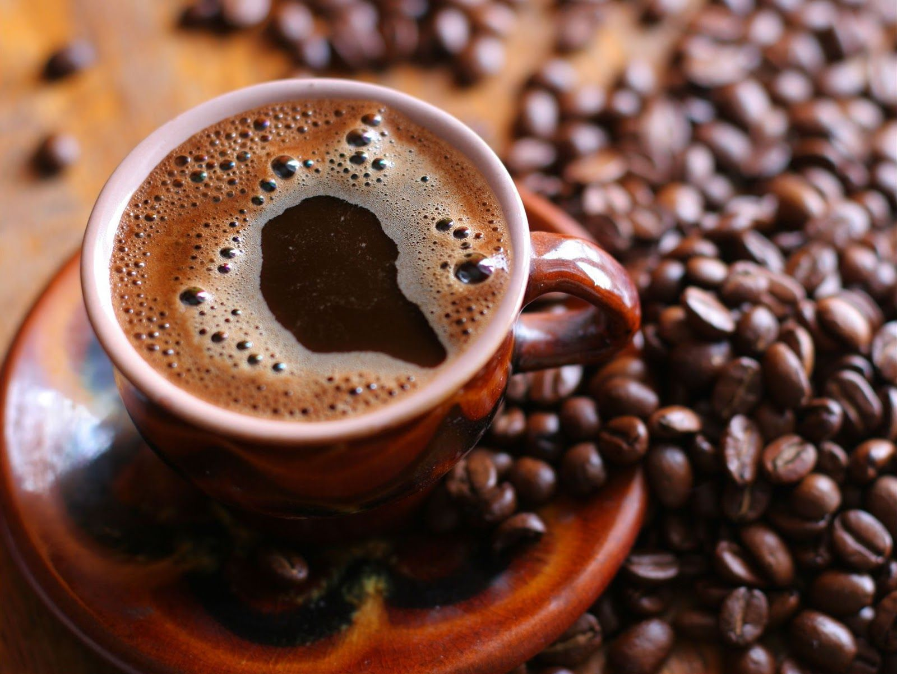
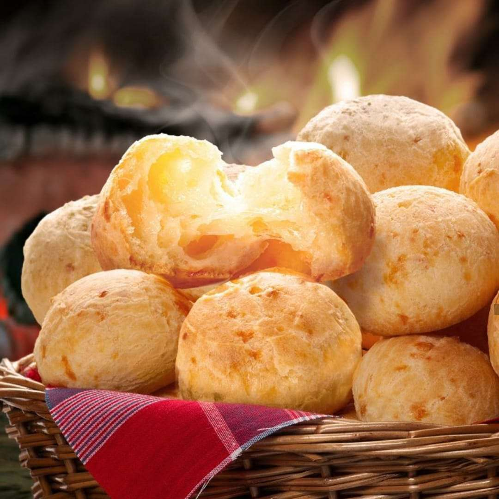
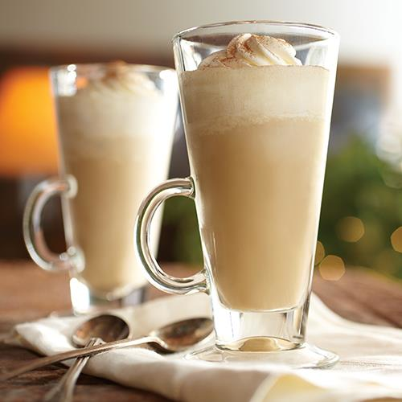

Nosso Objetivo:
Nós somos uma cafeteria que tem como objetivo a venda de um café
de qualidade, bem como divulgar sua origem histórica no Brasil. Assim
possibilitamos aos nossos clientes uma ótima experiência onde elespodem
conhecer a historia do café, e suas diversas variedades e sabores.
Em nosso cardápio prezamos por oferecer alimentos e bebidas que complementem a experiencia do cliente
  Entre as opções mais pedidas e recomendadas pelo público estão: Café (torra clara, média e escura), Americano, Expresso, Cappuccino,
Machiato. Além disso temos também opções de lanches como: Croissant, pães de queijo e Donuts.
A nossa recepção, area de lazer e convívio conta com um espaço kids, show ao vivo, e um espaço confortável para ficar com a família, aonde
além de um ambiente confortável voce pode aprender um pouco sobre a história do Brasil
Conheça os tipos de torra, as qualidades e intensidades de cada café
O nosso país esta classificado como o maior produtor e exportador de café